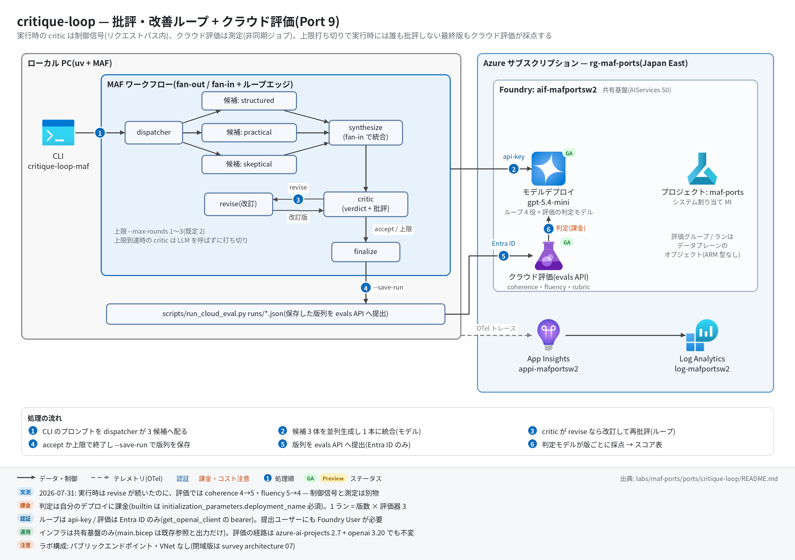

critique-loop 実行ガイド
対象:
labs/maf-ports/ports/critique-loop/(Port 9・パターン: 評価駆動ループ — 並列候補 → 統合 → 批評 ⇄ 改訂のサイクリックグラフ + Foundry クラウド評価)
最終確認: 2026-09-29 オフライン(44 passed・ruff clean・依存 agent-framework-core 1.19.0 / agent-framework-openai 1.14.4 / openai 3.20.0 / azure-ai-projects 2.7.0)/ ライブ: 2026-07-31(当時の構成 = agent-framework-core 1.13 / openai 2.51 / azure-ai-projects 2.4。Azure リソースは削除済み — 再デプロイ手順は §5)
正は本 Markdown。 人間用 HTML(同じディレクトリのrunbook.html)はpython3 labs/tools/build_runbooks.pyで生成する(HTML は直接編集しない)。設計判断と移植の学びは README。
1. このパターンで確かめること
- 質問 1 つから、候補 3 体の並列生成(fan-out)→ 統合(fan-in)→ 批評(構造化出力
{"verdict": "accept"|"revise", "critiques": [...]})→ 改訂 → 再批評、のループが回り、accept なら早期終了・上限(--max-rounds、既定 2)到達なら打ち切りで必ず止まること。上限到達時、critic は LLM を呼ばずに打ち切る(= 最終改訂は実行時には誰も批評しない)。 --save-runで保存した版列(初稿 / 改訂 1 / 改訂 2)を、Foundry の evals API(builtin.coherence/builtin.fluency+ rubric のscore_model)でサーバー側で採点し、実行時の verdict(revise/accept/unevaluated)と並べたスコア表が出ること。- 技術選定上の意味: 実行時の LLM judge(制御信号)とクラウド評価(測定)は別部品で、「実行時 revise が続いたのにクラウド評価では fluency が下がった」という食い違いが 7 月のライブで実際に出た(README 学び 1・検証結果(ライブ))。
2. 構成

| コンポーネント | 役割 | 課金 |
|---|---|---|
MAF Workflow(ローカル、workflow.py) |
dispatcher → candidate ×3 → synthesize → critic ⇄ revise → finalize のサイクリックグラフ | なし |
モデルデプロイ(共有基盤、FOUNDRY_MODEL = gpt-5.4-mini) |
候補 3 + 統合 1 + 批評 ≤ 上限 + 改訂 ≤ 上限 回の呼び出し(上限 2 なら最大 8 回) | トークン従量 |
Foundry クラウド評価(evals API、scripts/run_cloud_eval.py) |
版ごとの採点(評価器 3 つ × 版数)。評価グループ / ランはプロジェクトのデータプレーンのオブジェクト | 判定モデル(同じデプロイ)のトークン従量 |
| Application Insights(共有基盤) | OTel トレース(executor.process / invoke_agent / chat) | 取り込み量従量 |
| 本ポート固有の Azure リソース | なし(infra/main.bicep は existing 参照と出力のみ) |
— |
3. 前提
| 区分 | 必要なもの | 備考 |
|---|---|---|
| ツール | uv(Python 3.11 以上。uv が取得。検証は 3.13) | オフライン実行はこれだけ |
| Azure(ライブのみ) | 共有基盤(infra/shared.bicep + infra/roles.bicep)。本ポート固有リソースなし | 課金あり |
| 権限(ループ) | API キー(FOUNDRY_API_KEY)のみ |
— |
| 権限(クラウド評価) | az login 済みユーザーにプロジェクトの Foundry User(旧名 Azure AI User、ロール ID 53ca6127-db72-4b80-b1b0-d745d6d5456d)。プロジェクト / アカウント MI には roles.bicep で Foundry User + Cognitive Services OpenAI User |
RBAC 伝播に 5〜15 分。評価は Entra ID のみ(キー不可) |
環境変数(labs/maf-ports/.env。雛形は labs/maf-ports/.env.example。ライブ実行時のみ必要):
| 変数 | 用途 | 取得元 |
|---|---|---|
FOUNDRY_OPENAI_V1_ENDPOINT |
ループのチャット呼び出し先(https://<foundry>.openai.azure.com/openai/v1) |
shared.bicep 出力 openaiV1Endpoint |
FOUNDRY_MODEL |
モデルデプロイ名(ループと評価の判定モデルの両方) | shared.bicep 出力 modelDeploymentName |
FOUNDRY_API_KEY |
ループの API キー(run_cloud_eval.py も設定読み込みで必須扱い。評価自体は Entra ID) |
az cognitiveservices account keys list -n aif-<baseName> -g <rg> |
FOUNDRY_PROJECT_ENDPOINT |
クラウド評価のみ(https://<foundry>.services.ai.azure.com/api/projects/maf-ports) |
shared.bicep 出力 projectEndpoint |
APPLICATIONINSIGHTS_CONNECTION_STRING |
トレース送信先(未設定ならトレース無効で動く) | shared.bicep 出力 appInsightsConnectionString |
4. オフライン実行(Azure 不要・無料)
cd labs/maf-ports/ports/critique-loop
uv sync --extra dev
uv run pytest # 期待: 44 passed, 1 deselected(ネットワーク不要)
uv run ruff check . # 期待: All checks passed!クラウド評価の送信内容だけならオフラインで確認できる(値はダミーでよい。--dry-run はネットワークに出ない):
uv sync --extra dev --extra eval
FOUNDRY_OPENAI_V1_ENDPOINT=https://x.openai.azure.com/openai/v1 FOUNDRY_MODEL=gpt-5.4-mini FOUNDRY_API_KEY=dummy \
uv run python scripts/run_cloud_eval.py runs/<保存済みの実行結果>.json --dry-run
# 期待: testing_criteria(azure_ai_evaluator ×2 + score_model)と items(stage / runtime_verdict 付き)の JSONオフラインテストが固定している主な挙動:
- 上限到達時は最後の改訂を批評せず(critic は LLM を呼ばない)に打ち切る(
test_loop_stops_at_max_rounds_without_final_critique) - 最初の批評が accept なら改訂ゼロで終了、1 回改訂後に accept でも終了(
test_early_exit_when_first_critique_accepts/test_accept_after_one_revision) - 構造化出力が壊れていたら応答全文を 1 批評として revise(安全側)、revise なのに批評が空なら accept に正規化(
test_malformed_critique_falls_back_to_revise_with_raw_text/test_revise_with_empty_critiques_normalized_to_accept) - 候補 3 体が並列に走り、統合プロンプトに全候補が入る(
test_candidates_run_concurrently/test_fan_in_synthesis_prompt_contains_all_candidates) - 評価アイテムの runtime_verdict 対応付け: 上限打ち切りの最終版 =
unevaluated、早期終了の最終版 =accept、それ以外 =revise(test_runtime_verdict_mapping_for_max_rounds_run/test_runtime_verdict_mapping_for_accepted_run) - testing_criteria は
builtin.coherence(query+response)/builtin.fluency(response)+score_modelrubric、データソースはインライン JSONL(test_testing_criteria_builtin_pair_and_rubric/test_data_source_wraps_items_as_inline_jsonl) - 集計は stage 順・評価器ごとの平均と initial → 最終版の delta(
test_summarize_orders_stages_and_averages_scores/test_format_summary_shows_verdicts_and_delta)
5. ライブ実行(Azure 必要・課金あり)
5.1 デプロイ
# 共有基盤が未作成なら先に作る(labs/maf-ports/README.md「実行の前提」と infra/shared.bicep 冒頭コメント)
cd labs/maf-ports
az group create -n <rg> -l japaneast
az deployment group create -g <rg> -f infra/shared.bicep \
-p baseName=<baseName> modelName=gpt-5.4-mini modelVersion=<版> modelCapacity=10
# 第 2 段: MI へのロール割り当て(クラウド評価に必須。手順は infra/shared.bicep 末尾のコメント)
az deployment group create -g <rg> -f infra/roles.bicep \
-p baseName=<baseName> accountPrincipalId=<AID> projectPrincipalId=<PID>
# 評価を提出する自分にもプロジェクトの Foundry User(ロール ID で指定すると改名の影響を受けない)
az role assignment create --assignee <自分の UPN か objectId> \
--role 53ca6127-db72-4b80-b1b0-d745d6d5456d \
--scope "$(az cognitiveservices account show -n aif-<baseName> -g <rg> --query id -o tsv)/projects/maf-ports"
# 本ポートの Bicep は existing 参照と出力だけ(新規リソースなし。エンドポイントの確認用)
cd ports/critique-loop
az deployment group create -g <rg> -f infra/main.bicep -p baseName=<baseName>出力を labs/maf-ports/.env に転記する(§3 の表)。
5.2 実行
cd labs/maf-ports/ports/critique-loop
uv sync --extra dev --extra live
uv run critique-loop-maf "Explain recursion with examples."
uv run critique-loop-maf "What are the best practices for API design?" --max-rounds 3 --show-history
uv run critique-loop-maf "Explain recursion with examples." --save-run runs/recursion.json # 評価の入力
uv run pytest -m live # 期待: 1 passed(max_rounds=1 の最小 1 周)
# クラウド評価(az login 済み + FOUNDRY_PROJECT_ENDPOINT)
uv sync --extra dev --extra live --extra eval
uv run python scripts/run_cloud_eval.py runs/recursion.json # builtin 2 種 + rubric
uv run python scripts/run_cloud_eval.py runs/recursion.json --no-rubric # rubric を外す(切り分け用)CLI のオプション: --max-rounds(1〜3、既定 2)/ --show-history(各周回の批評と改訂を表示)/ --json(全出力を JSON)/ --save-run PATH。評価スクリプト: --name(評価グループ名)/ --no-rubric / --dry-run / --poll-interval(既定 10 秒)/ --timeout(既定 900 秒)。
期待される出力の例(ループ。stderr の進捗は CLI の書式どおり、数値は例。候補の完了順は並列なので毎回変わる):
tracing: App Insights 有効
[candidate:practical] done (2841 chars)
[candidate:structured] done (3310 chars)
[candidate:skeptical] done (2977 chars)
[synthesize] initial draft (3605 chars)
[critic] round 1: revise (10 critiques)
[revise] round 1: revised (4420 chars)
[critic] round 2: revise (6 critiques)
[revise] round 2: revised (4891 chars)
[critic] round 3: max-rounds (0 critiques)
[save] runs/recursion.json
<最終回答>
[summary] iterations=3 revisions=2/2 stop=max-rounds final_chars=4891期待される出力の例(クラウド評価 --no-rubric。initial と revision-2 の値は 7 月のライブ実測 — README「検証結果(2026-07-31 ライブ)」、revision-1 の値と ID は形の例):
eval group: eval_...
eval run: evalrun_... (status=queued)
status=in_progress
status=completed
report: https://ai.azure.com/...
stage runtime_verdict coherence fluency
initial revise 4.00 5.00
revision-1 revise 5.00 4.00
revision-2 unevaluated 5.00 4.00
delta initial -> revision-2: coherence: +1.00, fluency: -1.00rubric(score_model)込みの既定実行では右端に revision_rubric 列が増える。ただし rubric は 7 月のライブで権限の切り分け中に PermissionDenied が出たまま再実行しておらず(builtin 2 種のみ完走)、実測の出力例はない。列が - になる・ランが失敗する場合は §9。
6. 確認観点
| 確認 | # | 観点 | 確認方法 | 期待結果 |
|---|---|---|---|---|
| 1 | 正常系: ループ完走 | uv run critique-loop-maf "Explain recursion with examples." |
stderr に candidate ×3 → synthesize → critic / revise が並び、[summary] ... stop=max-rounds か stop=accepted で終わる。最終回答が stdout に出る |
|
| 2 | 上限打ち切りの呼び出し回数 | --max-rounds 1 で実行し stderr を見る |
revise の場合: [critic] round 1: revise → [revise] round 1 → [critic] round 2: max-rounds (0 critiques)(上限到達の critic は LLM を呼ばない)。round 1 で accept なら改訂なしで終了 |
|
| 3 | 分岐: 早期終了 | 簡単な質問(例: "What is 2+2?")で実行 | critic が accept を返せば改訂なしで stop=accepted(モデル裁量なので revise が続くこともある — 上限で必ず止まれば OK) |
|
| 4 | 異常系: 入力検証 | --max-rounds 4(モデル呼び出し前に落ちるので、.env の 3 点さえあればダミー値でも確認できる) |
error: max_rounds は 1〜3(元アプリのスライダー範囲): 4 で exit 2 |
|
| 5 | クラウド評価: 送信内容 | run_cloud_eval.py ... --dry-run |
testing_criteria 3 件と、版数ぶんの items(最後の item の runtime_verdict が unevaluated か accept) |
|
| 6 | クラウド評価: 完走 | run_cloud_eval.py runs/recursion.json(まず --no-rubric でも可) |
status が completed になり、stage × 評価器の表と delta 行、report: の URL が出る |
|
| 7 | パターン固有: 実行時判断と測定の突き合わせ | 表の runtime_verdict 列と各スコア列を見比べる |
unevaluated の最終版にもスコアが付く(実行時の死角をクラウド評価が補う)。revise 続きでもスコアが単調に上がるとは限らない — 下がった評価器があれば README 学び 1 と同じ現象 |
|
| 8 | ポータルで評価レポート | report: の URL を開く(Foundry ポータルのプロジェクト → 評価) |
評価グループ critique-loop-stages とランが見え、アイテムごとのスコアと理由が読める |
|
| 9 | 観測: トレース到達 | §7 の KQL | executor.process critic が「改訂数 + 1」本、executor.process revise が改訂数ぶん、invoke_agent / chat スパンが並ぶ |
|
| 10 | コスト・後片付け | §8 | 使わない期間は RG ごと削除。評価グループ / ランはプロジェクトと一緒に消える(本ポート固有リソースはない) |
7. トレース・評価の確認
az monitor app-insights query --app appi-<baseName> -g <rg> \
--analytics-query "dependencies | where timestamp > ago(30m) | summarize count() by name | order by name asc"- 期待するスパン名:
workflow.run、executor.process dispatcher/executor.process candidate_structured(ほか 2 体)/executor.process synthesize/executor.process critic/executor.process revise/executor.process finalize、invoke_agent <エージェント名>(candidate_* / synthesizer_agent / critic_agent / reviser_agent)、chat <モデル名> - 周回数の読み方:
executor.process criticの件数 = 改訂数 + 1(最後の 1 本は上限到達の打ち切りで、配下にinvoke_agent critic_agentがない) - 評価の結果はトレースではなくポータルの評価レポート(
report_url)とrun_cloud_eval.pyの表で見る
8. 片付け
az group delete -n <rg> --yes --no-wait # 共有基盤ごと削除(ステートレス。Bicep + roles.bicep で再現可)ローカルの runs/*.json は実行結果(プロンプトと回答全文)を含むので、不要なら削除する。
9. トラブルシューティング
| 症状 | 原因 | 対処 |
|---|---|---|
error: 環境変数が未設定: ... |
labs/maf-ports/.env に 3 点(FOUNDRY_OPENAI_V1_ENDPOINT / FOUNDRY_MODEL / FOUNDRY_API_KEY)がない。run_cloud_eval.py(--dry-run 含む)も同じ設定読み込みを通る |
§3 の表どおり転記。--dry-run だけならダミー値でよい |
error: FOUNDRY_PROJECT_ENDPOINT が未設定 |
クラウド評価だけが使う変数 | shared.bicep 出力 projectEndpoint を転記 |
| 評価ランが一律 PermissionDenied | 権限が 3 層ある: 判定用デプロイ(initialization_parameters.deployment_name)/ プロジェクト・アカウント MI(Foundry User + OpenAI User)/ 提出ユーザー自身の Foundry User(casebook P-I09) |
roles.bicep を再実行し、提出ユーザーにも Foundry User を付与して 5〜15 分待つ |
| 再デプロイ後に PermissionDenied が再発 | プロジェクト MI のローテーションで旧 principal への割り当てが孤児化(P-I04) | roles.bicep を新しい principalId で再実行 |
| ロール名「Azure AI User」で割り当てできない | 改名ロールアウト(Azure AI User → Foundry User) | ロール ID 53ca6127-db72-4b80-b1b0-d745d6d5456d で指定 |
rubric(revision_rubric)だけ失敗・- |
7 月は未解決のまま(builtin は完走) | まず --no-rubric で builtin を通し、rubric は別途切り分け |
error: timeout (900s) |
評価ランがキュー待ち | --timeout 1800 で再実行。ポータルの評価一覧で状態を確認 |
| トレースが出ない | APPLICATIONINSIGHTS_CONNECTION_STRING 未設定、または --extra live 未導入 |
起動時に tracing: App Insights 有効 が出るか確認。取り込みに数分かかる |
10. 関連・更新履歴
- 設計判断と学び: README
- 評価機能の GA / プレビューと課金: features/05 観測・評価
- 詰まりどころ(評価の権限 3 層・MI ローテーション): casebook 02 C. ID と RBAC
- 同型パターン: ループ + データ条件の終了は game-design-team、fan-out / fan-in は mixture-of-agents
| 日付 | 内容 |
|---|---|
| 2026-09-29 | 初版(依存を agent-framework-core 1.19.0 / openai 3.20.0 / azure-ai-projects 2.7.0 に更新。evals API の経路は変更不要と確認。Bicep はロール名コメントのみ更新。構成図を v2(日本語・処理順バッジ・注記帯)に更新) |